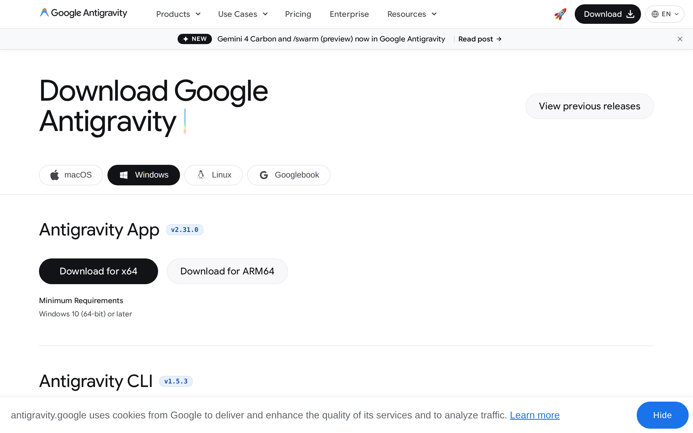
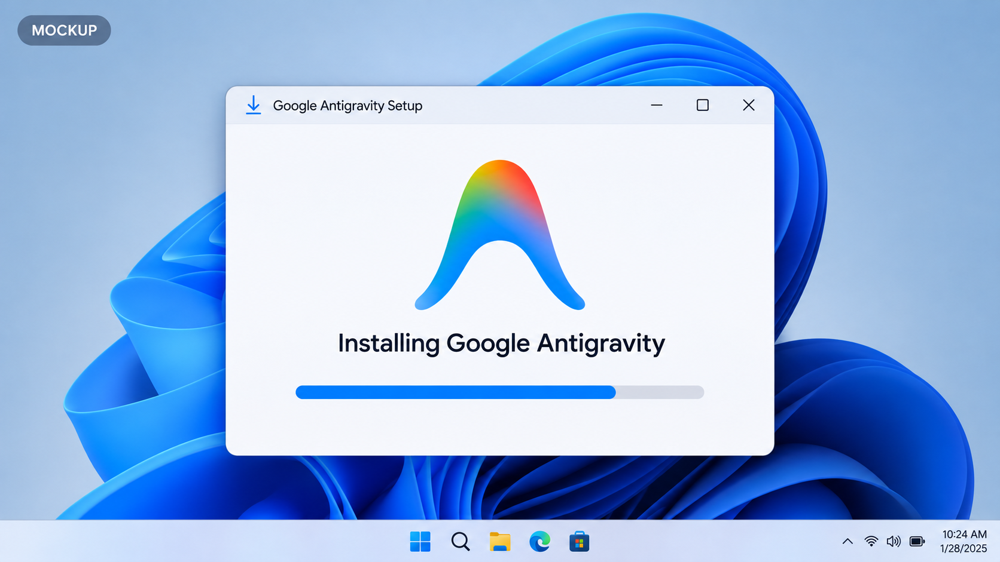
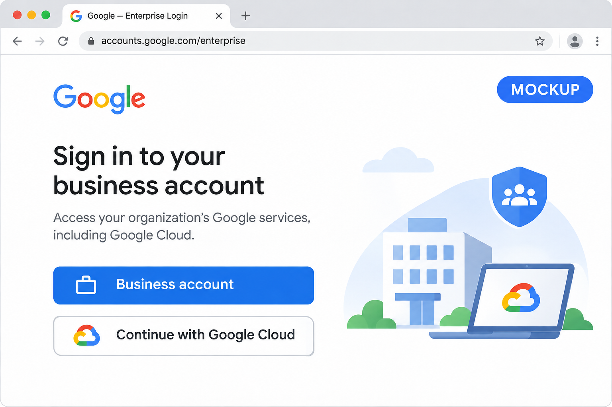
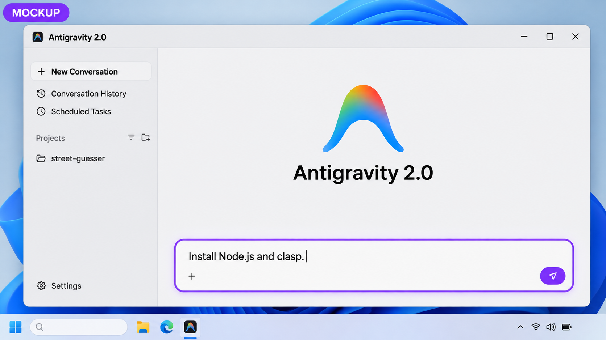
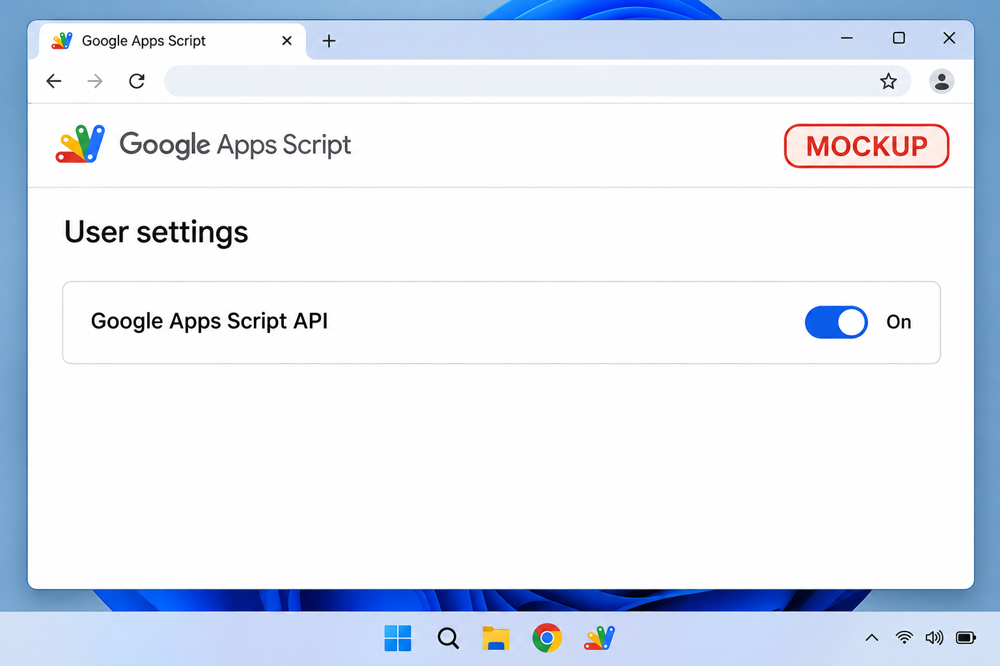
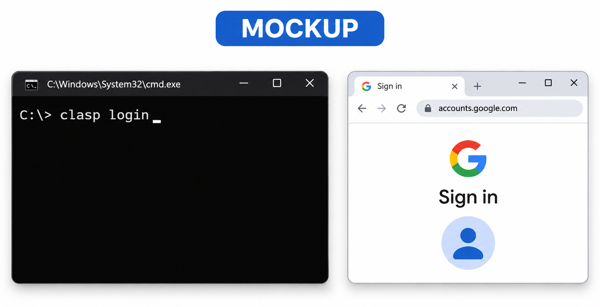

01 / Baixe o Antigravity
Na página oficial, selecione Windows. Em Antigravity App, baixe a versão x64 para a maioria dos computadores ou ARM64 se seu computador tiver processador ARM.
Abrir página de downloads ↗
Conecte sua conta corporativa e prepare tudo para criar projetos.
A primeira imagem é uma captura real. As demais são ilustrações geradas por IA: as telas podem ser diferentes. Use sua conta corporativa e siga as orientações de TI.
Na página oficial, selecione Windows. Em Antigravity App, baixe a versão x64 para a maioria dos computadores ou ARM64 se seu computador tiver processador ARM.
Abrir página de downloads ↗
Abra o instalador baixado, siga as instruções e abra o Antigravity. Se necessário, peça à TI para autorizar a instalação.
Guia de instalação do Antigravity ↗
Escolha Business account → Continue with Google Cloud e entre com sua conta corporativa Gemini Enterprise. Selecione a licença e o projeto Google Cloud atribuídos a você. A TI precisa liberar esse acesso antes.
Se sua empresa usar federação de identidade, siga as instruções da TI para Advanced WIF Configuration. Se precisar escolher Other, peça à TI o ID e a região do projeto.
Guia de autenticação do Antigravity ↗ · Configuração empresarial ↗
No Antigravity, abra uma nova conversa e cole o prompt abaixo. O clasp precisa do Node.js 20 ou mais recente. Se instalar manualmente, escolha o instalador Windows (.msi) da versão LTS. A instalação pode precisar de autorização da TI. Se o terminal não encontrar o Node, reinicie o Antigravity.
Baixar Node.js LTS ↗
A imagem mostra onde digitar. Use o prompt completo abaixo.
Ajude-me a configurar Node.js LTS e @google/clasp no Windows. Primeiro verifique node --version e npm --version. O Node deve ser versão 20 ou mais recente. Se não estiver instalado ou estiver desatualizado, ajude-me a instalar o Node.js LTS pelo instalador oficial .msi e explique se preciso da autorização de administrador. Depois instale o clasp com npm install -g @google/clasp e verifique node --version, npm --version e clasp --version. Explique cada ação antes de executá-la. Não altere nem publique projetos Apps Script.
Abra as configurações do Apps Script no navegador com a conta corporativa que tem acesso aos seus scripts. Expanda Google Apps Script API e ative a opção. Se ela estiver bloqueada ou indisponível, peça ajuda à TI.
Abrir configurações do Apps Script ↗
Abra um terminal do Windows e execute clasp login. No navegador, entre com sua conta corporativa e conclua a autorização. Se sua empresa bloquear o acesso, fale com a TI.

No Antigravity, crie um projeto pelo ícone de pasta com sinal de mais na barra lateral. Adicione uma pasta nova e vazia e, se solicitado, escolha o modo local. Depois cole este prompt:
Ajude-me a criar um projeto Apps Script nesta pasta vazia. Verifique node --version, npm --version, clasp --version e clasp show-authorized-user. Se eu não estiver conectado à minha conta corporativa, peça que eu execute clasp login e conclua a autorização pessoalmente. Depois ajude-me a criar um projeto de teste independente com clasp create --type standalone. Mostre como abri-lo com clasp open-script. Não envie código, publique nem altere projetos existentes sem meu pedido explícito.
Para trabalhar em um script existente, abra-o em script.google.com, selecione Configurações do projeto e copie o ID do script. Em outra pasta vazia, use clasp clone SCRIPT_ID. Revise as alterações antes de executar clasp push.
Mantenha .clasprc.json privado: ele contém credenciais de autorização. Nunca faça commit desse arquivo. Adicione-o e também .clasp.json às regras de exclusão do Git antes de fazer commit.